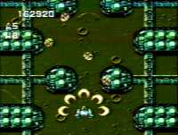

|


Review
Game Type: Overhead-View Shooter
Pretty much a typical overhead shooter. The only exception is the four
types of bombs, which power up if you grab the same type repeatedly. Five
weapon types which can be powered up eight times each if your wings haven't
been damaged.
Gameplay: 90/100
I was overjoyed to learn there was another shooter by Compile available
for the NES that I hadn't even played yet. For the most part, it lives up
to expectations. It isn't as addictive as Zanac overall, but the weapon
systems are nearly as deep as the SNES's Space Megaforce. Too bad the
weapon designs aren't as intriguing. Gun-Nac has the most complex bomb
setup of any shooter to date, though, and that helps make up for it. Each of the four
"bomb" types has a distinct movement pattern, which makes some more suitable
for certain targets than others. Each type can be powered up four times,
but higher power levels take more bombs out of your reserve. Basically
what all this means is that not only do you need to make sure you have
the right gun for the current situation, you also need to watch your bomb
type and power level, and grab appropriate powerups for each, all while
dodging bullets. Should keep any shooter fan quite busy, especially if you
turn on the option to have each destroyed enemy shoot one last bullet...
Graphics: 60/100
The graphics are fairly detailed, but a more simplistic look usually
works better with the NES's limited color pallette. Also, while I have
nothing against cutesy games, mixing a few cute enemies with these dark
colors and a host of more realistic enemies just doesn't work. I'm afraid
the graphics bring the overall game down a bit.
Sound: 90/100
The soundtrack consists of upbeat tunes with the most fierce drum
beats the NES can muster. The sound effects are likewise the cream of
the NES crop. One of the last NES games where I won't put on a CD while
playing.
Overall: 80/100
Those dark graphics and incoherent enemy designs really drag Gun-Nac
down. But if you can tolerate fighting starships, bunny rabbits, and rolls
of toilet paper threatening to kill you with cottony softness all at
the same time, you might like this game. The deep weapon systems will
definitely make it worth any shooter fan's while, doubly so for Compile
fans. Think of it as a translation of Space Megaforce for the NES.
Codes
| Stage Select
| In the Config screen, set the Sound Test to 5. You can now select any stage
from the Area option, including the secret Stage 0.
|
|